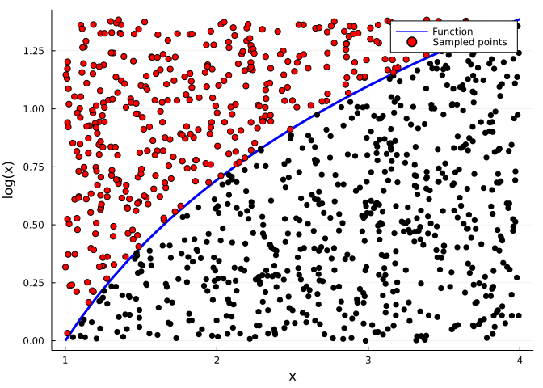
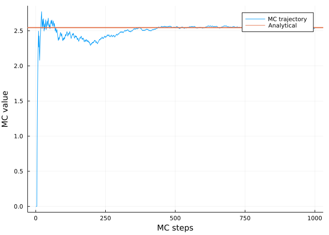

Monte Carlo Methods
- Solve complex problems using random sampling from a probablity distribution (i.e. stochastic description).
- Useful to evolve a physical system to a new state from an esemble of potential future states.
Integrating a function MC sampling
If we want to evaluate the integral of a function over some domain we can numerically approximate this using the midpoint rule: \[ \int_a^b f(x) dx = \frac{b-a}{N} \sum_{i=1}^N f(x_i) \tag{1}\]
There is an alternative way to do this using probablity theory to determine the expectation value of a function \(f(x)\) for random variable \(x\): \[ \int_a^b p(x) f(x) dx = \frac{b-a}{N} \sum_{i=1}^N f(x_i) \tag{2}\] where \(p(x)\) is a uniform probablity distribution over the interval \([a,b]\).
The difference between numerically evaluating Equation 1 and Equation 2, is that Equation 1 is evaluated over a grid of points and Equation 2 is randomly sampled points.
The error of MC integration is \(\propto \frac{1}{\sqrt{N}}\) as a result of central limit theorem
Example integrating a function using MC sampling1
Example integrating a function using MC sampling

Statistical Thermodynamics & Ensemble Properties
- Microscopic → Macroscopic description
- How positions and momenta of \(10^{23}\) particles relates to bulk temperature, pressure, or volume.
- Ensembles use probablity of specific microstate. Probability theory provides average of a function or variable, \(\langle X \rangle\): \[ \langle X \rangle = \frac{1}{N} \sum_{i=1}^N n_i \, X_i = \sum_{i=1}^N \underbrace{p_i}_{\text{PDF}} X_i \tag{3}\]
- If \(\langle X \rangle\) is continous, Equation 3 is an integral.
- \(p_i\) is the probablity the system is in state \(i\). The probablity density function (PDF) has the property that its normalized, i.e. \(\sum_{i=1}^N p_i = 1\)
Statistical Thermodynamics & Ensemble Properties
- The consqequence of Equation 3 is that microscopic collections (i.e. ensemble of systems) can be used to calculate macroscopic properties.
- Choice of \(p_i=\frac{z_i}{Z}\) depends on macroscopic conditions which manifest through the partition function: \[ Z = \sum_i e^{-\beta\,X_i} \tag{4}\]
- For a macroscopic system that has constant particles, volume and temperature, i.e., canonical.
- \(\beta = \frac{1}{k_b\,T}\) and \(X_i=E_i\) where Boltzmann factor is \(z_i = e^{-\frac{E_i}{k_b\,T}}\) \[ \langle E \rangle = \frac{1}{Z} \sum_i e^{-\frac{E_i}{k_b\,T}} E_i \tag{5}\]
## Statistical Thermodynamics & Ensemble Properties
- The biggest challenge in evaluating Equation 5 is it requires knowledge of all possible configurations.
- If \(Z\) is a configurational integral, e.g., \(Z = \int e^{-U(\mathbf{r}^N)/k_B\,T} d\mathbf{r}^N\), then there are \(3N\) possible configs!
- The key insight is that most configurations are not probable:
\(U\) is the potential energy